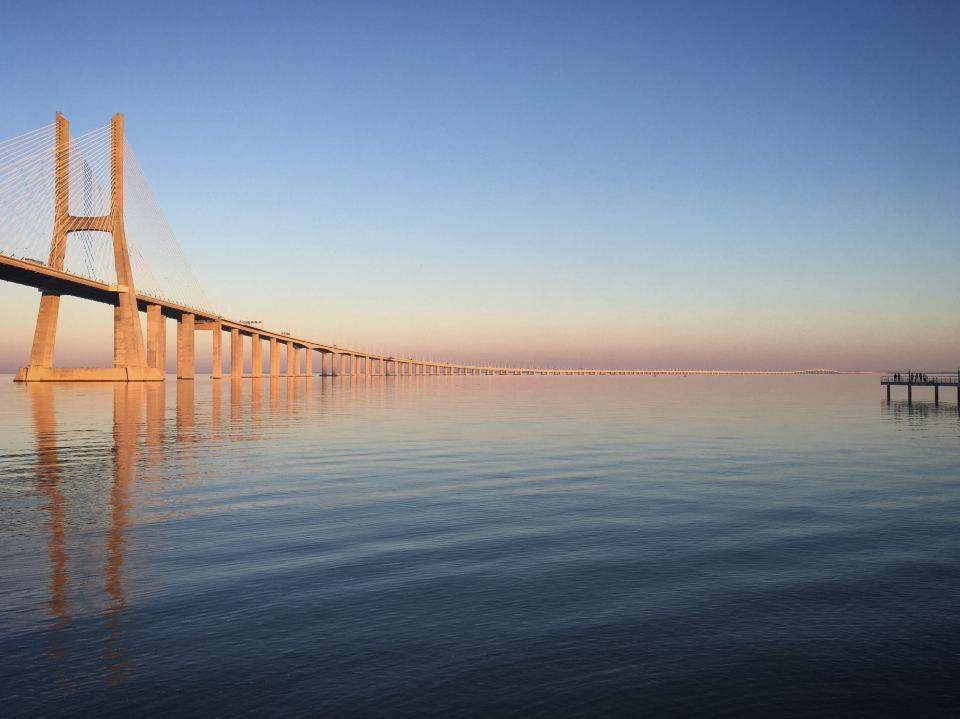

Vår verksamhet
I dag omsätter koncernen 34 miljarder kronor och har tunnelprojekt i Sverige, Norge, Finland, Schweiz, Österrike och Kanada. Vi arbetar med både borr- och sprängteknik och tunnelborrmaskiner, och har en av Europas största flottor av borriggar.
Vilket berg ska genom?

Infrastrukturtunnlar
Väg-, järnvägs- och tunnelbanetunnlar är koncernens största område. Vi driver ofta flera fronter samtidigt och sprängs nattetid i tätort med vibrationsövervakning i realtid.
Området står för 58 procent av omsättningen.

Bergrum och energilager
Uttjänta oljebergrum byggs om till värmelager och nya bergrum sprängs för datahallar och vätgas. Bergets temperatur på 8 grader året runt sparar kyla.
Vi har byggt elva värmelager i berg sedan 2015.

Mining Services
Kontrakterad ortdrivning, schaktsänkning och förstärkning åt gruvbolag i Sverige, Finland och Ontario. Våra lag arbetar på 1 400 meters djup.
Långa avtal på fem till tio år ger en stabil grund i koncernen.

Geoteknik och design
Geologer och bergmekaniker kartlägger berget innan första salvan. Det gör kalkylen säkrare och minskar behovet av förstärkning.
Vi kärnborrar omkring 90 kilometer per år.
Från borrkärna till öppen tunnel
- 1

Kärnborra och kartlägg
Geologerna borrar och kartlägger sprickzoner innan kalkylen låses, så att förstärkningen dimensioneras efter verkligt berg.
- 2

Välj drivmetod
Borra och spränga eller tunnelborrmaskin – valet görs utifrån bergkvalitet, längd och störningar för grannarna.
- 3

Driv och förstärk
Varje salva följs av skrotning, sprutbetong och bultning. Vibrationer och buller mäts och publiceras för boende i realtid.
- 4

Installera och lämna över
Vi lägger vägbana, ventilation och tätning och lämnar över en tunnel som är redo för trafik.